Bài viết nổi bật
Bài viết nổi bật


[TIN NÓNG] Goku chính thức đạt tới Bản Năng Vô Cực!
5 giây bất khả xâm phạm – Goku UI bước vào trận chiến với khả năng né 90% đòn. Bạn có đủ bản lĩnh để đối đầu?...
5 giây bất khả xâm phạm – Goku UI bước vào trận chiến với khả năng né 90% đòn. Bạn có đủ bản lĩnh để đối đầu?...


[PHÂN TÍCH] Vegeta hóa Oozaru – đối thủ gục trong 3 đòn
Sức mạnh hoang dã bùng nổ! Vegeta hồi sinh giữa trận, cộng máu, cộng damage – cỗ máy hủy diệt chính thức tái xuất...
Sức mạnh hoang dã bùng nổ! Vegeta hồi sinh giữa trận, cộng máu, cộng damage – cỗ máy hủy diệt chính thức tái xuất...


[CHIẾN THUẬT] Piccolo Orange: Phòng thủ tối thượng
Khả năng hồi máu, phản sát thương, tạo phân thân tấn công từ xa – Piccolo đang trở thành lựa chọn "meta" trong mọi trận đánh đôi với khả năng câu kéo cực mạnh!...
Khả năng hồi máu, phản sát thương, tạo phân thân tấn công từ xa – Piccolo đang trở thành lựa chọn "meta" trong mọi trận đánh đôi với khả năng câu kéo cực mạnh!...


[META MỚI] Broly SSJ4 – Ác mộng cuối trận!
Bị đánh càng mạnh, phản đòn càng khét! Broly SSJ4 với skill Rage Pulse gây damage diện rộng theo lượng máu đã mất – tướng đấu đơn hoàn hảo cho mọi trận đấu!...
Bị đánh càng mạnh, phản đòn càng khét! Broly SSJ4 với skill Rage Pulse gây damage diện rộng theo lượng máu đã mất – tướng đấu đơn hoàn hảo cho mọi trận đấu!...
Các bài viết khác

 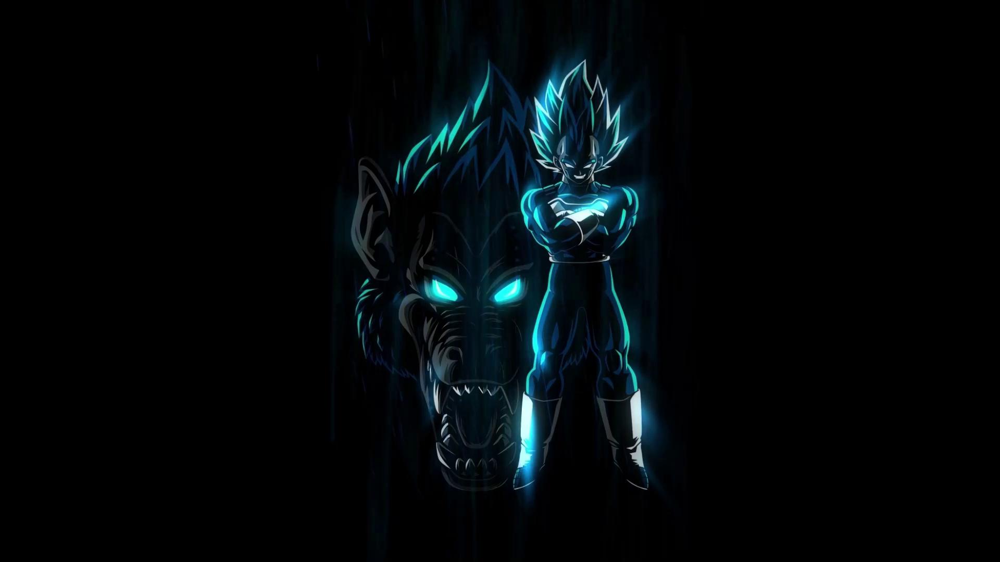
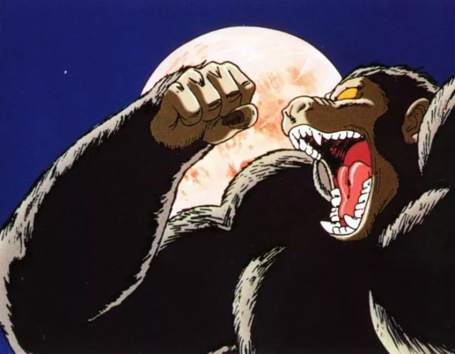
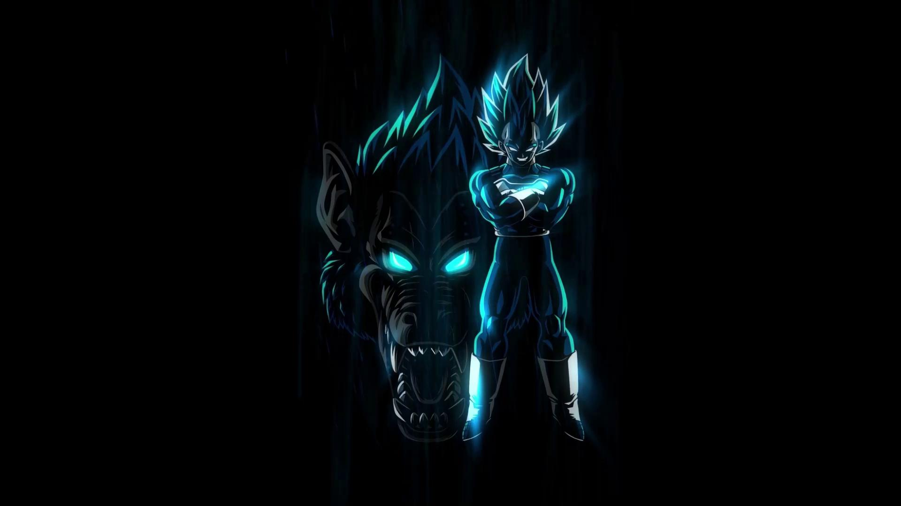
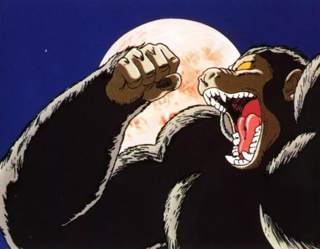
 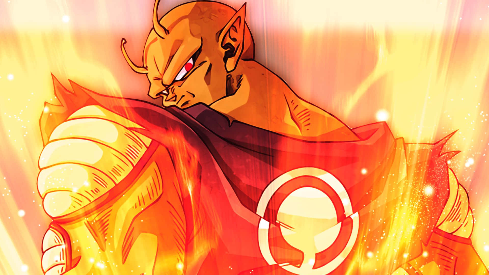
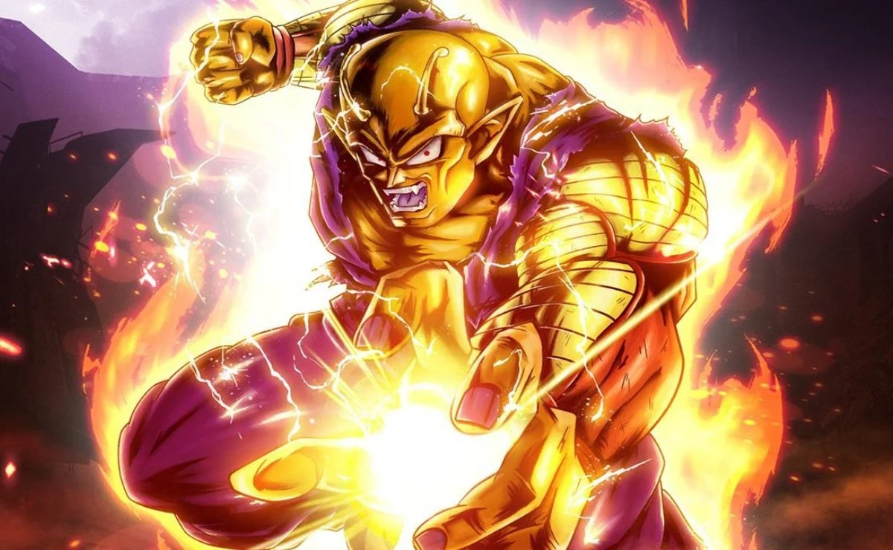
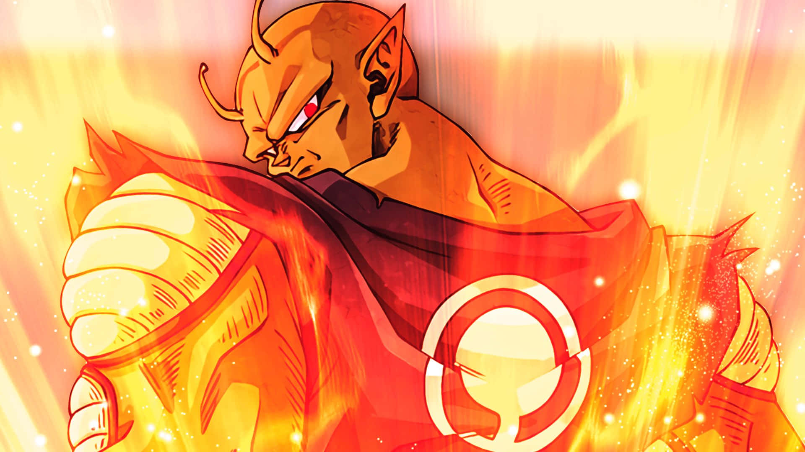
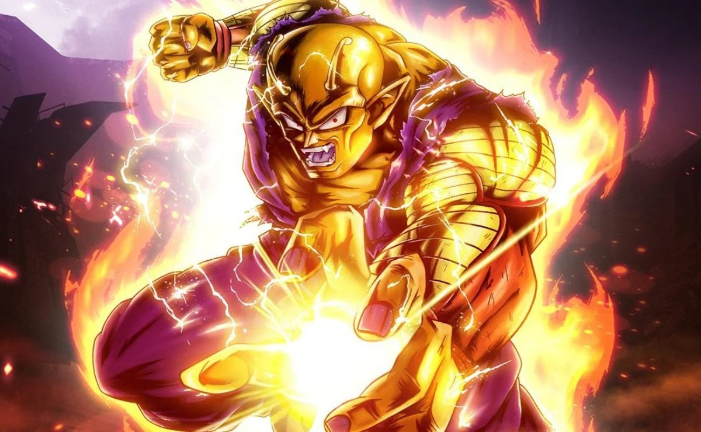
 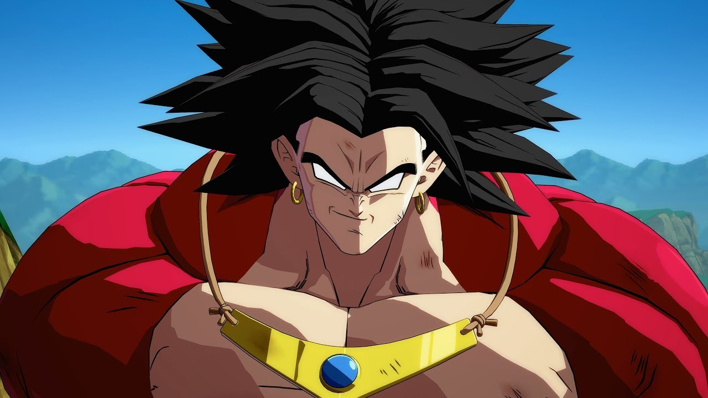
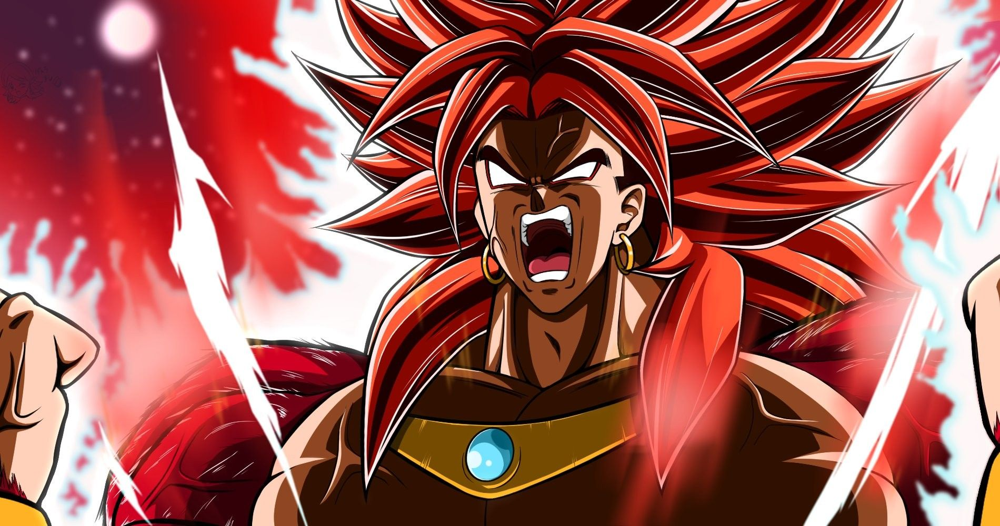
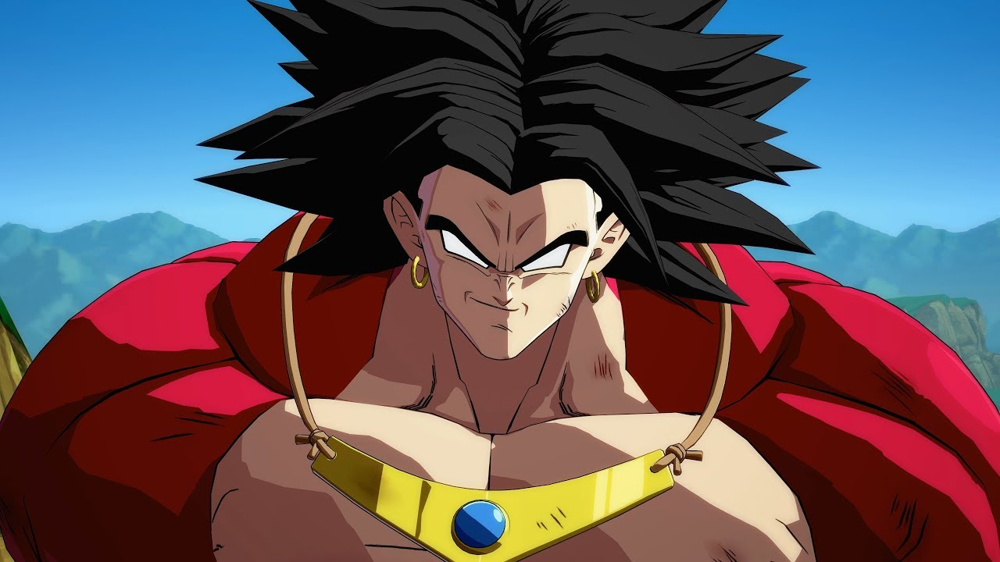
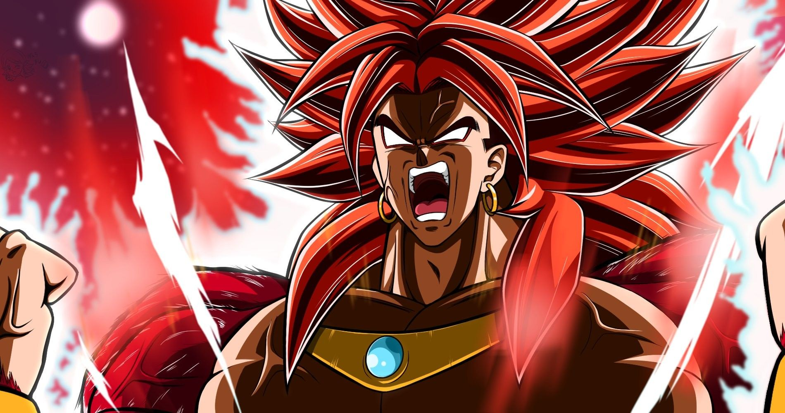